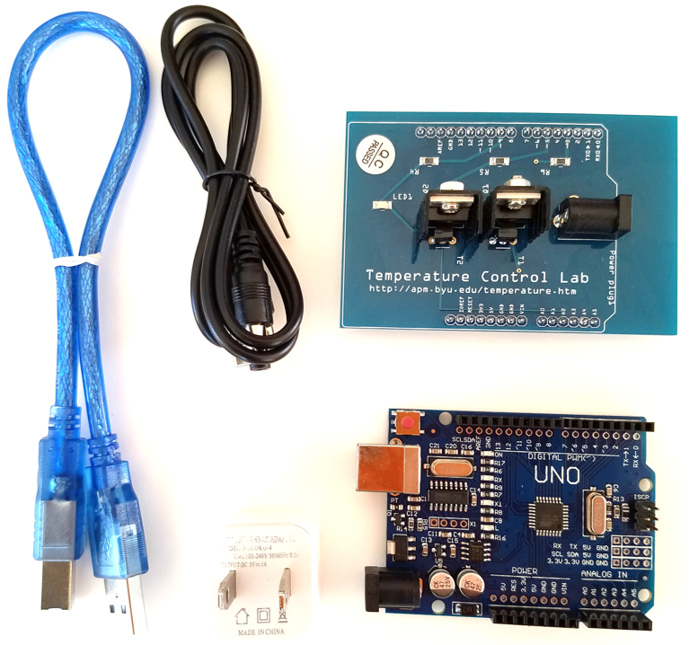

2.2. Temperature Control Lab, step identification#
The temperature control lab or TCLab is a laboratory device used for thermal projects. It can be used to simulate and develop thermal control and regulation systems. The TCLab features a feedback control application with an Arduino, an LED, 2 heaters and 2 temperature sensors:
one heater will represent the TCS heating elements used for temperature control.
another will represent external disturbances such as solar radiation in the Cubesat application.
During this tutorial we will start using this card and carry out temperature measurements on control steps. The aim is to identify a dynamic model that can be used to synthesise the control.
2.2.1. The TCLab Arduino Package#
The Temperature Control Laboratory hardware consists of five components:
Arduino microcontroller board (Arduino Uno, Arduino Leonardo, or equivalents).
The Temperature Control Laboratory plug-in board (also known as a shield).
Five watt USB power supply.
5.5mm to USB power supply cable.
USB 2.0 data cable. (w/mini-USB connector for Arduino Uno, or micro-USB cable for Arduino Leonardo.)
TCLab kit: 
2.2.1.1. The main TCLab components#
Thermistors: These are temperature sensors, there are two thermistors on a TCLab to measure at two different points. The TCLab is equipped with 2 heaters to heat the system for temperature control experiments.
2.2.1.2. Assembly#
The TCLab is attached to the inputs of the arduino board (sort of metal teeth), then a blue cable connects the micro USB type B port on the arduino board to the USBA port on the PC. The TCLab is powered via the mains and its DC power port.
2.2.1.3. Setup#
Before going further, be sure to complete the steps outlined under Hardware setup as described in TCLab README. Mac OS users may need to install a serial driver available here. Normally the TCLab shield will already be mounted on the Arduino board, and the firmware driver will have been loaded on to the Arduino.
2.2.2. Getting to grips with the Arduino code#
The Arduino sketch, when downloaded and installed on a compatible Arduino device, supports the Temperature Control Lab. The sketch is used in conjunction with the compatible Python library TCLab for programmable control of the Temperature Control Lab with Python via Python Serial library.
Read the Arduino .ino code in C language from the file here. Describe its structure and, in particular, its temporal execution. Copy below the part of the code that initalises the microntroleur at start-up, as well as the main loop.
Note: For a better understanding, read the following page Basic structure of an arduino code
Answers
setup(): The setup function starts configurations with analogReference(EXTERNAL), then initializes serial communication using Serial.begin(baud) where baud is the communication speed. There is a while() that waits for serial communication to be established. This empty loop is necessary to ensure that the program doesn’t try to communicate via the serial port until it’s ready.
The pinQ1 and pinQ2 outputs are initialized to a value of 0 using analogWrite, which initially switches off the 2 radiators.
// arduino startup
void setup() {
analogReference(EXTERNAL);
Serial.begin(baud);
while (!Serial) {
; // wait for serial port to connect.
}
analogWrite(pinQ1, 0);
analogWrite(pinQ2, 0);
}
loop(): This function is the main execution function and is executed in a loop, at each iteration of the loop it calls parseSerial() to analyze the data received via the serial port, then it calls dispatchCommand() to execute the commands. The checkTemp() function is written as a comment and is inactive.
// arduino main event loop
void loop() {
parseSerial();
dispatchCommand();
//checkTemp();
}
2.2.2.1. Compiling and uploading code to an Arduino microcontroller#
Complete the following steps:
Install Arduino software (if not done)
If necessary upload the TClab TCLab-sketch.ino code in the Arduino microcontroller (select the right Arduino card before with
Tools/Cardthe right card type)Select the communication port
Tools/PortOpen the serial monitor
Tools/Serial Monitor
2.2.2.2. Reading Temperatures with serial monitor#
The temperature sensors on the temperature control lab can be acccessed with the attributes T1 and T2.
In the serial monitor, send orders
T1andT2what do you observe? Can you find the corresponding part of the code?
Answers
The dispatchcommand() function in the main execution loop executes commands (cmd) received over the serial link from the serial monitor or the python environment.
void dispatchCommand(void) {
[...]
else if (cmd == "T1") {
sendFloatResponse(readTemperature(pinT1));
}
[...]
else if (cmd == "T2") {
sendFloatResponse(readTemperature(pinT2));
}
In our case, it executes commands T1 or T2 and calls the functions below:
Reading an analogue input with analogue-to-digital conversion and scaling. Averaging several acquisitions reduces sensitivity to measurement noise.
// return average of n reads of thermister temperature in °C
inline float readTemperature(int pin) {
float degC = 0.0;
for (int i = 0; i < n; i++) {
degC += analogRead(pin) * 0.322265625 - 50.0; // use for 3.3v AREF
//degC += analogRead(pin) * 0.170898438 - 50.0; // use for 1.75v AREF
}
return degC / float(n);
}
The averaged value is sent via the serial link.
void sendFloatResponse(float val) {
Serial.println(String(val, 3));
}
2.2.2.3. Setting Heaters#
Both heaters can be set between 0 to 100% power with the functions Q1 x ou Q2 x (where x is between 0 and 100). The device firmware limits the heaters to a range of 0 to 100%. The current value of attributes may be accessed via
Using the serial monitor, set source Q1 to 100% heat and observe the change in temperatures T1 and T2. What do you observe? Stop all the heaters with the
Xcommand.
Note A:
The led on the temperature control laboratory will turns from dim to bright when either heater is on.
Closing the TCLab instance turns the heaters off.
The power level of the two heaters may be different. Current versions of the firmware limit maximum power of first heater to 4 watts, and maximum power of the second heater to 2 watts.
In addition to the constraints imposed by the firmware, the power supply may not be capable of providing all of the power needed to operate both heaters at 100%
The values retrieved from these functions may be different than the values set due to the power limits enforced by the device firmware.
Note B:
Each command returns a result string.
Command | Action
-:- | -:-
A | software restart. Returns “Start”
LED float | set LED to float for 10 sec. range 0 to 100. Returns actual float
P1 float | set pwm limit on heater 1, range 0 to 255. Default 200. Returns P1.
P2 float | set pwm limit on heater 2, range 0 to 255. Default 100. Returns P2.
Q1 float | set Heater 1, range 0 to 100. Returns value of Q1.
Q2 float | set Heater 2, range 0 to 100. Returns value of Q2.
Q1B float | set Heater 1, range 0 to 100. Returns value of Q1 as a 32-bit float.
Q2B float | set Heater 2, range 0 to 100. Returns value of Q2 as a 32-bit float.
R1 | get value of Heater 1, range 0 to 100
R2 | get value of Heater 2, range 0 to 100
SCAN | get values T1 T2 Q1 Q1 in line delimited values
T1 | get Temperature T1. Returns value of T1 in °C.
T2 | get Temperature T2. Returns value of T2 in °C.
T1B | get Temperature T1. Returns value of T1 in °C as a 32-bit float.
T2B | get Temperature T2. Returns value of T2 in °C as a 32-bit float.
VER | get firmware version string
X | stop, enter sleep mode. Returns “Stop”
2.2.3. Getting to grips with the Python code#
2.2.3.1. Installing the tclab library#
The TCLab package is installed from a terminal window (MacOS) or command window (PC) with the command
pip install tclab
Alternatively, the installation can be performed from within a Jupyter/Python notebook with the command
!pip install tclab
There are occasional updates to the library. These can be installed by appending a --upgrade to the above commands and demonstrated in the next cell.
!pip install tclab --upgrade
Requirement already satisfied: tclab in /opt/hostedtoolcache/Python/3.9.19/x64/lib/python3.9/site-packages (1.0.0)
Requirement already satisfied: pyserial in /opt/hostedtoolcache/Python/3.9.19/x64/lib/python3.9/site-packages (from tclab) (3.5)
[notice] A new release of pip is available: 23.0.1 -> 24.0
[notice] To update, run: pip install --upgrade pip
2.2.3.2. Importing#
Once installed, the tclab package can be imported into Python and an instance created with the Python statements
from tclab import TCLab
lab = TCLab()
TCLab() attempts to find a device connected to a serial port and return a connection. An error is generated if no device is found. The connection should be closed when no longer in use.
The following cell demonstrates this process, and uses the tclab LED() function to flash the LED on the Temperature Control Lab for a period of 10 seconds at a 100% brightness level.
Connect TCLab card:
from tclab import TCLab
lab = TCLab()
lab.LED(100)
If you have no TCLab card use the simulator:
from tclab import TCLabModel as TCLab
lab = TCLab()
lab.LED(100)
2.2.4. Reading Temperatures#
Once a tclab instance is created and connected to a device, the temperature sensors on the temperature control lab can be acccessed with the attributes .T1 and .T2. For example, given an instance lab, the temperatures are accessed as
T1 = lab.T1
T2 = lab.T2
lab.T1 and lab.T2 are read-only properties. Any attempt to set them to a value will return a Python error.
# from tclab import TCLab
print("Temperature 1: %0.2f °C"%(lab.T1))
print("Temperature 2: %0.2f °C"%(lab.T2))
---------------------------------------------------------------------------
NameError Traceback (most recent call last)
Cell In[2], line 3
1 # from tclab import TCLab
----> 3 print("Temperature 1: %0.2f °C"%(lab.T1))
4 print("Temperature 2: %0.2f °C"%(lab.T2))
NameError: name 'lab' is not defined
2.2.5. Setting Heaters#
For legacy reasons, there are two ways to set the power levels of the heaters.
The first way is to the functions.Q1() and .Q2() of a TCLab instance. For example, both heaters can be set to 100% power with the functions
lab = TCLab()
lab.Q1(100)
lab.Q2(100)
The device firmware limits the heaters to a range of 0 to 100%. The current value of attributes may be accessed via
Q1 = lab.Q1()
Q2 = lab.Q2()
Important notes:
The led on the temperature control laboratory will turns from dim to bright when either heater is on.
Closing the TCLab instance turns the heaters off.
The power level of the two heaters may be different. Current versions of the firmware limit maximum power of first heater to 4 watts, and maxium power of the second heater to 2 watts.
In addition to the constraints imposed by the firmware, the power supply may not be capable of providing all of the power needed to operate both heaters at 100%
The values retrieved from these functions may be different than the values set due to the power limits enforced by the device firmware.
import time
print("\nStarting Temperature 1: %0.2f °C"%(lab.T1))
print("Starting Temperature 2: %0.2f °C"%(lab.T2))
print("\nTurn Heaters On")
lab.Q1(100)
lab.Q2(100)
t_heat = 30
print("\nHeat for", t_heat, "seconds")
time.sleep(t_heat)
print("\nTurn Heaters Off")
lab.Q1(0)
lab.Q2(0)
print("\nFinal Temperature 1: %0.2f °C"%(lab.T1))
print("Final Temperature 2: %0.2f °C"%(lab.T2))
---------------------------------------------------------------------------
NameError Traceback (most recent call last)
Cell In[3], line 3
1 import time
----> 3 print("\nStarting Temperature 1: %0.2f °C"%(lab.T1))
4 print("Starting Temperature 2: %0.2f °C"%(lab.T2))
6 print("\nTurn Heaters On")
NameError: name 'lab' is not defined
2.2.6. Synchronizing with Real Time using clock#
The tclab module includes clock for synchronizing calculations with real time. clock(tperiod, tstep) generates a sequence of iterations over a period of tperiod seconds evenly by tstep seconds. If tstep is omitted then the default period is set to 1 second.
from tclab import clock
# from tclab import clock
tperiod = 6
tstep = 2
for t in clock(tperiod,tstep):
print(t, "sec.")
0 sec.
2.0 sec.
4.0 sec.
6.0 sec.
There are some considerations to keep in mind when using clock. Most important, by its nature Python is not a real-time environment. clock makes a best effort to stay in sync with evenly spaced ticks of the real time clock. If, for some reason, the loop falls behind the real time clock, then the generator will skip over the event to get back in sync with the real time clock. Thus the total number of iterations may be less than expected. This behavior is demonstrated in the following cell.
#from tclab import TCLab, clock
#import time
tfinal = 12
tstep = 2
for t in clock(tfinal, tstep):
print(t, "sec.")
# insert a long time out between 3 and 5 seconds into the event loop
if (t > 3) and (t < 5):
time.sleep(2.2)
0 sec.
2.0 sec.
4.0 sec.
8.0 sec.
10.0 sec.
12.0 sec.
Note: The clock command is based on the yield keyword which is similar to a return statement used for returning values or objects in Python. However, there is a slight difference. The yield statement returns a generator object to the one who calls the function which contains yield, instead of simply returning a value. For more details read this tutorial. Meanwhile, consider the example below.
def generator():
yield "Welcome"
yield "in"
yield "space"
gen_object = generator()
for i in gen_object:
print(i)
Welcome
in
space
2.2.7. Step response using clock with TCLab#
Exercise: write a code cell that turns on heater 1 at 50% power, then log the temperature responses (T1 and T2) once per second for 600 seconds. The output of the cell should report the time, power level, and temperature for each measurement. You will need the
clockfunction from tclab for this exercise. The data have to be stored into vectors :time,Q1,T1,T2.
#from tclab import TCLab, clock
import matplotlib.pyplot as plt
import numpy as np
time = []
Q1 = []
T1 = []
T2 = []
print("\nTurn Heater Q1 On")
lab.Q1(50)
tfinal = 600
tstep = 1
for t in clock(tfinal, tstep):
print('.', end='')
time = time + [t]
T1 = T1 + [lab.T1]
T2 = T2 + [lab.T2]
Q1 = Q1 + [50]
print("\nTurn Heater Q1 Off")
lab.Q1(0)
Turn Heater Q1 On
---------------------------------------------------------------------------
NameError Traceback (most recent call last)
Cell In[7], line 12
9 T2 = []
11 print("\nTurn Heater Q1 On")
---> 12 lab.Q1(50)
14 tfinal = 600
15 tstep = 1
NameError: name 'lab' is not defined
The measured curve can then be displayed:
plt.plot(time, T1,'g-', label='T1')
plt.plot(time, T2,'r-', label='T2')
plt.xlabel('Time (s)')
plt.ylabel('Temperature (°C)')
plt.legend()
plt.show()
This curve can also be converted into a dataframe and saved as an Excel file (.csv also possible):
import pandas as pd
# Dataframe creation
df = pd.DataFrame([time, T1, T2, Q1]).T
df.columns = ['Time', 'T1', 'T2', 'Q1']
df = df.set_index('Time')
# Dataframe plot
df.plot(grid=True)
# Save the dataframe into a .csv file
df.to_csv('./data/Step_Test_Data.csv')
2.2.8. Fitting the Step Change Data to a First Order Model#
For a first-order linear system initially at steady-state, the response to a step input change at \(t=0\) is given by
where \(\Delta U\) is the magnitude of the step change. Converting to notation used for the temperature control lab where \(y(t) = T_1(t)\) and \(\Delta U = \Delta Q_1\)
Questions:
Recall the differential equation and the transfer function of a 1st order SISO (Single Input Single Output) dynamic system. Use notations compatible with the description of the step response above.
Identify the steady state gain \(K_1\) and time constant \(\tau_1\)
Compare the 1st order response with the measured data. Conclusion.
%matplotlib inline
import pandas as pd
# Read data
df = pd.read_csv('./data/Step_Test_Data.csv') # my data
df = df.set_index('Time')
T1 = df['T1']
Q1 = df['Q1']
# Static gain K1
# complete
# Time constant tau1
# complete
import matplotlib.pyplot as plt
import numpy as np
exp = np.exp
t = df.index
T1_est = T1.min() + K1*(1 - exp(-t/tau1))*DeltaQ1
plt.figure(figsize=(10,5))
ax = plt.subplot(2,1,1)
df['T1'].plot(ax = ax, grid=True)
plt.plot(t,T1_est)
plt.title('Step Test Data Compared to Model')
plt.subplot(2,1,2)
plt.plot(t,T1_est-T1)
plt.grid()
plt.title('Residual Error')
---------------------------------------------------------------------------
NameError Traceback (most recent call last)
Cell In[10], line 25
22 exp = np.exp
23 t = df.index
---> 25 T1_est = T1.min() + K1*(1 - exp(-t/tau1))*DeltaQ1
27 plt.figure(figsize=(10,5))
28 ax = plt.subplot(2,1,1)
NameError: name 'K1' is not defined
2.2.9. Nodal thermal model#
We will show here that a physical model made up of thermal resistances and capacities can explain the dynamic responses observed and the transfer functions identified previously.
Questions:
Recall the characteristic equations for thermal resistances and capacities relating temperatures \(T_i\) and heat flows (power) \(P\).
Select the thermal model to represent the temperature rise if we assume that the heating element and the temperature sensor are at the same temperature.
Determine the values of the thermal resistance \(R_{th}\) and the thermal capacity \(C_{th}\) from the 1st order transfer function identified above. Assume that the maximum power of the heating element (4W) and the outside temperature are known.

%matplotlib inline
import numpy as np # basic package for numerical calculations
import matplotlib.pyplot as plt # plotting package
from scipy.signal import step # Import from scipy of the step response
# parameter values and units
# complete
# First order step response
num = [Rth]
den = [Rth*Cth, 1]
t, y = step(system=(num, den))
T1_est = T_ambient + P1*y
plt.figure(figsize=(10,5))
ax = plt.subplot(1,1,1)
df['T1'].plot(ax = ax, grid=True)
plt.plot(t,T1_est)
plt.title('Step Test Data Compared to Model')
#Print data
print("Thermal resistance Rth = %.2f K/W"%Rth)
print("Thermal capcitance Cth = %.2f J/K"%Cth)
---------------------------------------------------------------------------
NameError Traceback (most recent call last)
Cell In[11], line 10
4 from scipy.signal import step # Import from scipy of the step response
6 # parameter values and units
7 # complete
8
9 # First order step response
---> 10 num = [Rth]
11 den = [Rth*Cth, 1]
12 t, y = step(system=(num, den))
NameError: name 'Rth' is not defined
The parameter values in the above plot were chosen to (at least roughly) reproduce the measured response of temperature control laboratory. The specific heat capacity for solids is typically has values in the range of 0.2 to 0.9 J/K/gram. Using a value of 0.9 that is typical of aluminum and plastics used for electronic products, the estimated mass of the heater/sensor pair would be:
print("Equivalent mass : %.2f g"%(Cth/0.9))
---------------------------------------------------------------------------
NameError Traceback (most recent call last)
Cell In[12], line 1
----> 1 print("Equivalent mass : %.2f g"%(Cth/0.9))
NameError: name 'Cth' is not defined
2.2.10. Two State Model#
2.2.10.1. From first order to second order thermal model#
Question: Explain why the 1st order model is not completely satisfactory.
Question: Propose a nodal thermal diagram to represent the observed dynamics, taking into account the response of the temperature sensor. For this third model, we consider the possibility that the heater and sensor may not be at the same temperature. In other words, that the heater/sensor assembly is not at a uniform temperature. To account for this possibility, we introduce \(𝑇_𝐻\) to denote the temperature of heater one and \(𝑇_𝑆\) to denote the temperature of the corresponding sensor. We’ll further assume that sensor mainly exchanges heat with the heater, and the dominant heat transfer to the surroundings is through the heat sink attached to the heater.
Exercice or homework: Determine the form of the transfer function corresponding to this thermal diagram. The input is the temperature rise in %, the output is the temperature measurement in °C.
2.2.10.2. Fitting a Second Order Model by Least Squares#
Graphically determining a large number of parameters can be difficult. Second-order parameters can be determined using the least_square function, which minimises an error by optimisation.
Exercice: Propose a Python code to determine the second-order transfer function best suited to the measurement.
from scipy.optimize import least_squares
import numpy as np
Qmax = 50
def f(x):
# complete
return resid
ic = [0.86,40,130,20]
r = least_squares(f,ic,bounds=(0,np.inf))
r.x
---------------------------------------------------------------------------
NameError Traceback (most recent call last)
Cell In[13], line 11
7 return resid
9 ic = [0.86,40,130,20]
---> 11 r = least_squares(f,ic,bounds=(0,np.inf))
12 r.x
File /opt/hostedtoolcache/Python/3.9.19/x64/lib/python3.9/site-packages/scipy/optimize/_lsq/least_squares.py:820, in least_squares(fun, x0, jac, bounds, method, ftol, xtol, gtol, x_scale, loss, f_scale, diff_step, tr_solver, tr_options, jac_sparsity, max_nfev, verbose, args, kwargs)
817 if method == 'trf':
818 x0 = make_strictly_feasible(x0, lb, ub)
--> 820 f0 = fun_wrapped(x0)
822 if f0.ndim != 1:
823 raise ValueError("`fun` must return at most 1-d array_like. "
824 "f0.shape: {0}".format(f0.shape))
File /opt/hostedtoolcache/Python/3.9.19/x64/lib/python3.9/site-packages/scipy/optimize/_lsq/least_squares.py:815, in least_squares.<locals>.fun_wrapped(x)
814 def fun_wrapped(x):
--> 815 return np.atleast_1d(fun(x, *args, **kwargs))
Cell In[13], line 7, in f(x)
5 def f(x):
6 # complete
----> 7 return resid
NameError: name 'resid' is not defined
For the next tutorial, we’ll use the following transfer function: \( G_1(s) = \frac{0.65}{(27s + 1)(160s + 1)} \)
%matplotlib inline
import numpy as np # basic package for numerical calculations
import matplotlib.pyplot as plt # plotting package
from scipy.signal import step # Import from scipy of the step response
# First order step response
num = [0.657]
den = [160*27,160+27,1]
t, y = step(system=(num, den),T=np.linspace(0,600,100))
T1_est = 20.25 + y*50
plt.figure(figsize=(10,5))
ax = plt.subplot(1,1,1)
df['T1'].plot(ax = ax, grid=True)
plt.plot(t,T1_est)
plt.title('Step Test Data Compared to Model')
---------------------------------------------------------------------------
TypeError Traceback (most recent call last)
Cell In[14], line 14
12 plt.figure(figsize=(10,5))
13 ax = plt.subplot(1,1,1)
---> 14 df['T1'].plot(ax = ax, grid=True)
15 plt.plot(t,T1_est)
16 plt.title('Step Test Data Compared to Model')
File /opt/hostedtoolcache/Python/3.9.19/x64/lib/python3.9/site-packages/pandas/plotting/_core.py:1000, in PlotAccessor.__call__(self, *args, **kwargs)
997 label_name = label_kw or data.columns
998 data.columns = label_name
-> 1000 return plot_backend.plot(data, kind=kind, **kwargs)
File /opt/hostedtoolcache/Python/3.9.19/x64/lib/python3.9/site-packages/pandas/plotting/_matplotlib/__init__.py:71, in plot(data, kind, **kwargs)
69 kwargs["ax"] = getattr(ax, "left_ax", ax)
70 plot_obj = PLOT_CLASSES[kind](data, **kwargs)
---> 71 plot_obj.generate()
72 plot_obj.draw()
73 return plot_obj.result
File /opt/hostedtoolcache/Python/3.9.19/x64/lib/python3.9/site-packages/pandas/plotting/_matplotlib/core.py:450, in MPLPlot.generate(self)
448 def generate(self) -> None:
449 self._args_adjust()
--> 450 self._compute_plot_data()
451 self._setup_subplots()
452 self._make_plot()
File /opt/hostedtoolcache/Python/3.9.19/x64/lib/python3.9/site-packages/pandas/plotting/_matplotlib/core.py:635, in MPLPlot._compute_plot_data(self)
633 # no non-numeric frames or series allowed
634 if is_empty:
--> 635 raise TypeError("no numeric data to plot")
637 self.data = numeric_data.apply(self._convert_to_ndarray)
TypeError: no numeric data to plot
2.2.11. References#
[Hedengren] Hedengren, J., Process Dynamics and Control, Brigham Young University. Link
[Kantor, 2021] Kantor, JC., Chemical Process Control class materials, University of Notre Dame. Link / Github